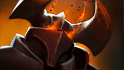

 混沌骑士
混沌骑士
背景故事
作为一名被上千个世界中无数战斗洗礼过的战斗大师，混沌骑士来自一个遥远的上层位面，在那里，宇宙的基本法则都能被直接感知到。在所有的法则中，混沌是最古老且最不知疲倦的——永无休止的搜寻着被他称为“光”的存在。很久以前,“光”违抗初始之契约离开了起源的世界，在其他世界开始了他的旅途。现在混沌骑士在一个个位面之间穿梭，无论到哪里，他永远都在搜寻然后抹杀“光”的存在 ，将其无数次的抹杀，然后进入下一个位面继续他的搜索。带着自己的铁甲战马“天劫”，带着疯狂的暴怒冲进战场，从宇宙的混乱中吸取力量。他就是混沌在物理位面的化身，并在有需要的时候他会召唤其他位面的自己，这群黑暗骑兵的齐冲如同自然之力一般无法阻挡。只有当一个世界中所有“光”的存在都被彻底消灭，他的搜寻才会结束。混沌骑士的铁蹄所到之处，死亡随之同行。
混乱之箭 眩晕持续时间和伤害值为负相关。 魔法消耗：140/140/14
冷却时间：10.0/10.0/
|
实相裂隙 目标单位将会强制面向混沌骑士，而且混沌骑士和幻象默认对目标发动攻击。 魔法消耗：50
冷却时间：24/18/12/6
|
混沌一击 混沌骑士的魔力使他有一定概率造成额外伤害，并且降低5点目标护甲，持续8秒。 护甲降低的负面状态在伤害发生前产生，与黯灭相似。 魔法消耗：0
冷却时间：0
|
混沌之军 从另一维度内召唤若干个混沌骑士的幻象。施放时有50%的几率额外召唤一个幻象。幻象继承全额攻击力，但是承受200%的伤害。 能够移除混沌骑士的大部分负面状态。 魔法消耗：125/200/27
冷却时间：130
|